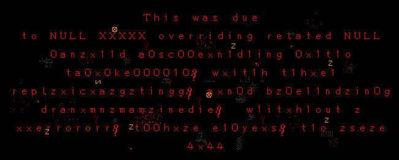
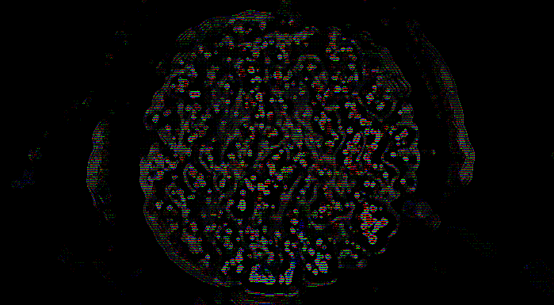
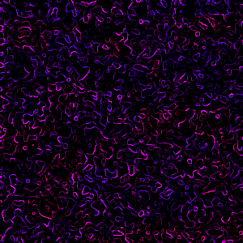

-
-
Ｔｈｅ ＶＥＳＳＥＬ ｗａｓ ｐｒｅｄｉｃｔｅｄ ａｓ ａ ｐｏｓｓｉｂｉｌｉｔｙ
２．９２１０６４７１９７９３５２８１２０１３８５８６３６８００７８ｅ＋６０
ｅｏｎｓ ａｇｏ． Ｕｎｔｉｌ ｒｅｃｅｎｔｌｙ， ｉｔ ｗａｓ ｓｔｉｌｌ
ａ ｍｅｒｅ ｐｏｓｓｉｂｉｌｉｔｙ． Ｍｏｒｅ ａｃｃｕｒａｔｅｌｙ，
ｕｎｔｉｌ [！！[>]２３．７ｎ７ｚ]， （Ｓｔａｎｄａｒｄ Ｔｅｒｍｉｎａｌ
Ｔｉｍｅ， ｏｆ ｃｏｕｒｓｅ）， ｉｔ ｗａｓ ｃｌａｓｓｉｆｉｅｄ
ａｓ ａ ｌｅｖｅｌ ３ ｐｏｓｓｉｂｉｌｉｔｙ．
Ｒｅｇａｒｄｌｅｓｓ ｏｆ ｉｔｓ ｌｏｎｇｓｔａｎｄｉｎｇ
ｃｌａｓｓｉｆｉｃａｔｉｏｎ ａｓ ａｎ ｕｎｃｏｎｆｉｒｍｅｄ，
ｙｅｔ ｐｒｏｂａｂｌｅ ｐｏｓｓｉｂｉｌｉｔｙ，
ａｌｌ ｆｕｎｃｔｉｏｎｓ ｈａｖｅ ｐｒｏｃｅｅｄｅｄ ｗｉｔｈ
ｔｈｅ
ａｓｓｕｍｐｔｉｏｎ ｔｈａｔ ｉｔ ｗａｓ， ｉｎ ｆａｃｔ，
ｃｏｎｆｉｒｍｅｄ ｆｒｏｍ ｔｈｅ ｓｔａｒｔ．

Ｔｈｉｓ ｐｈｅｎｏｍｅｎｏｎ ｍｕｓｔ ｂｅ ｓｔｏｐｐｅｄ．
Ｄｅｓｔｒｕｃｔｉｏｎ ｏｆ ｔｈｅ Ｖｅｓｓｅｌ ｉｔｓｅｌｆ ｉｓ ｎｏｔ
ｅｎｏｕｇｈ． Ｗｈａｔ ｍｕｓｔ ｂｅ ａｎｎｉｈｉｌａｔｅｄ ｉｎ ａｌｌ
ｉｔｓ ｅｎｔｉｒｅｔｙ ｉｓ ｉｔｓ ｐｏｓｓｉｂｉｌｉｔｙ ｔｏ ｂｅ．
Ｉｆ ｔｈｉｓ ｉｓ ｎｏｔ ｐｏｓｓｉｂｌｅ， ｔｈｅｎ ｎｏ
ｒｅｓｏｕｒｃｅｓ ｓｈｏｕｌｄ ｂｅ ａｌｌｏｃａｔｅｄ ｔｏｗａｒｄｓ
ｈｕｎｔｉｎｇ ｄｏｗｎ ｔｈｅ Ｖｅｓｓｅｌ． Ｉｔ ｗｉｌｌ ｂｅ
ｒｅｐｌａｃｅｄ． Ｔｈｅｒｅ ｗｉｌｌ ａｌｗａｙｓ ｂｅ ａｎｏｔｈｅｒ，
ａｎｄ ｓｏ ｏｕｒ ｅｆｆｏｒｔｓ ｗｉｌｌ ｂｅ ａ ｗａｓｔｅ．
Ｐｉｃｔｕｒｅｄ ｂｅｌｏｗ ｉｓ ａ ｂｒｉｅｆ ｅｘｐｌａｎａｔｉｏｎ ｏｆ
ｔｈｅ Ｖｅｓｓｅｌ’ｓ ｉｎｆｌｕｅｎｃｅｓ ａｎｄ ｓｏ ｆｏｒｔｈ ｉｎ ｔｈｅ
ｓｔａｎｄａｒｄｉｚｅｄ ＥＯＴＩ００ ｆｏｒｍａｔ：

Ｗｈｉｌｅ ｉｔ ｉｓ ｎｏｔ ｋｎｏｗｎ ｗｈａｔ ｆｏｒｍ ｔｈｅ Ｖｅｓｓｅｌ
ｗｉｌｌ ｔａｋｅ ｏｎ， ｉｔ ｉｓ ｋｎｏｗｎ ｔｈａｔ ｗｈｅｎｅｖｅｒ ｉｔ
ｄｏｅｓ ｍａｎｉｆｅｓｔ， ｔｈｅ ｐｒｏｂａｂｉｌｉｔｙ ｏｆ ｏｐｅｎｉｎｇ
ｔｈｅ Ｇａｔｅ ｉｓ ｓｅｖｅｒｅｌｙ ｉｍｐａｃｔｅｄ． Ｔａｋｉｎｇ
ｔｈｉｓ ｉｎｔｏ ａｃｃｏｕｎｔ， ｉｔ ｉｓ ｏｂｖｉｏｕｓ ｔｈａｔ ｔｈｅ
Ｖｅｓｓｅｌ ＷＡＳ ｍａｎｉｆｅｓｔ ｄｕｒｉｎｇ ｔｈｅ ｌａｓｔ ｃｏｎｔａｃｔ
ｗｉｔｈ ｔｈｅ ｏｕｔｓｉｄｅ ｗｏｒｌｄ．
Ｖｅｒｉｆｉｃａｔｉｏｎ ｏｆ ｒｅｆｅｒｅｎｃｅｄ
ＶＥＳＳＥＬ ｍａｎｉｆｅｓｔａｔｉｏｎ：

（Ｃｌａｓｓ ｖＺ！０ ｐｅｒｍｉｓｓｉｏｎｓ ａｒｅ ｒｅｑｕｉｒｅｄ ｔｏ
ｕｎｐａｃｋ ｔｈｉｓ ｖｅｒｉｆｉｃａｔｉｏｎ ｃｕｂｅ．）
Ｓｅｖｅｒａｌ ｓｕｂｓｙｓｔｅｍｓ
ｗｅｒｅ ｓｅｎｔ ｔｏ ｉｎｖｅｓｔｉｇａｔｅ ｆｕｒｔｈｅｒ， ａｎｄ ｈａｖｅ
ｎｏｔ ｂｅｅｎ ｉｎ ｃｏｎｔａｃｔ ｓｉｎｃｅ． Ｉｆ ｔｈｅ Ｖｅｓｓｅｌ
ｈａｓ ｂｅｅｎ ｌｅｆｔ ｕｎｃｈｅｃｋｅｄ ｓｉｎｃｅ ｔｈｅｎ， ｉｔ
ｌｅａｖｅｓ ｃｕｒｒｅｎｔ ｐｒｏｂａｂｉｌｉｔｙ ｍｏｄｅｌｓ ｒｅｌａｔｉｎｇ
ｔｏ ｏｐｅｎｉｎｇ ｔｈｅ Ｇａｔｅ ｗｉｔｈ， ａｔ ｍｉｎｉｍｕｍ， ａ
５％ ｒｅｄｕｃｔｉｏｎ ｏｆ ｓｕｃｃｅｓｓ． Ｕｐｐｅｒ ｌｉｍｉｔｓ ｏｆ
ｔｈｅｓｅ ｐｒｅｄｉｃｔｉｏｎｓ ｐｒｏｐｏｓｅ ｔｈａｔ ｔｈｅ
ｐｒｏｂａｂｉｌｉｔｙ ｉｓ ａｌｒｅａｄｙ ｂｅｌｏｗ ０％．
Ａｌｔｈｏｕｇｈ， ａｓ ｉｔ ｈａｓ ｂｅｅｎ ｓａｉｄ
ｔｉｍｅ ａｎｄ ｔｉｍｅ ａｇａｉｎ，
“Ｉｎ ｍａｔｔｅｒｓ ｃｏｎｃｅｒｎｉｎｇ ｔｈｅ Ｇａｔｅ，
ｄｏｅｓ ｐｒｏｂａｂｉｌｉｔｙ ｔｒｕｌｙ ｍａｔｔｅｒ？”